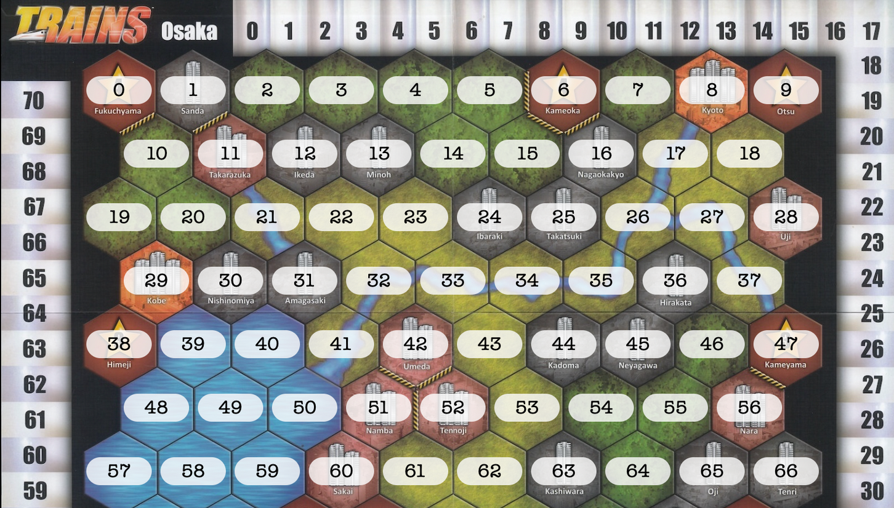
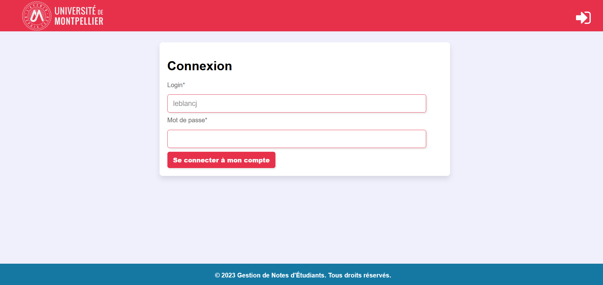

Moi
Passionné d'informatique depuis l'adolescence, j'ai commencé à apprendre la programmation à l'âge de 13 ans. En voulant simplement créer des petits jeux vidéo, c'est une vraie passion qui en est ressortie, et je savais que plus tard je voulais travailler dans ce domaine.
Parcours
C'est en réalisant mon stage de 3ᵉ dans le secteur informatique d'une grande entreprise que cette idée s'est confirmée pour moi, et mon trajet jusqu'au bac était tout tracé. La spécialité STI2D convenait parfaitement à mes besoins. Par la suite, sous les conseils de mes professeurs et après quelques mois de recherche, la voie du Bachelor Universitaire et Technologique s'est vue comme la meilleure à choisir pour mon profil.
Projets
Lors de mon parcours, plusieurs projets ont été réalisés dans l'objectif de m'améliorer : Le premier est le projet "Trains". Ce projet a pour objectif de coder le jeu japonais "Trains". Cela est l'aboutissement de l'apprentissage en développement Objet et IHM en Java.
Le second est le projet "Poursuite d'études", qui avait pour but d'imiter un projet en entreprise. Tout d'abord, ce projet avait pour but d'aboutir sur une application web qui peut gérer des étudiants avec une base de données. Nous avions aussi un client avec qui nous avons appliqué la méthode Agile pour simuler un vrai projet. Enfin, nous avons pu tester nos capacités en PHP, qui nous a été fraîchement enseigné.
